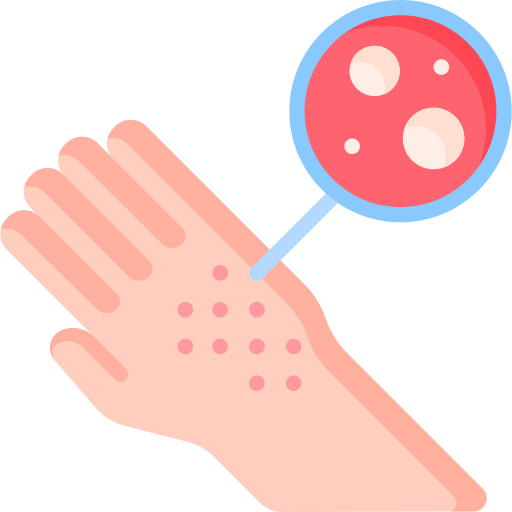
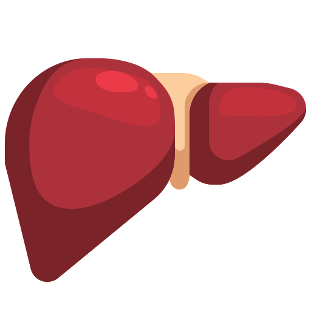

- 


- 
As doenças alimentares são cada vez mais comuns, e podem ser causadas pela ingestão de alimentos contaminados, pela falta de nutrientes essenciais ou pelo excesso de gordura e açúcar na dieta. Essas doenças podem ter consequências graves, como problemas digestivos, deficiências nutricionais, obesidade e até mesmo doenças crônicas, como diabetes e doenças cardíacas. Por isso, é essencial conhecer os sinais e sintomas das doenças alimentares, e tomar medidas para preveni-las.
Informações confiáveis sobre doenças alimentares e receitas adequadas para diferentes restrições alimentares
Ver ReceitasAqui você encontra informações detalhadas sobre diversas doenças alimentares, incluindo intolerâncias, alergias e outras restrições alimentares. Nossos artigos são baseados em evidências científicas e escritos por especialistas na área de nutrição e saúde.

Informações detalhadas sobre a intolerância à lactose, causas, sintomas, diagnóstico e dicas de alimentação adequada.

Informações sobre a doença celíaca, uma doença autoimune causada pela intolerância ao glúten, com dicas de alimentação sem glúten e receitas adequadas.

Informações sobre a alergia a frutos do mar, sintomas, diagnóstico e opções de substituição de ingredientes em receitas de frutos do mar.
Aqui você encontra deliciosas receitas adequadas para diferentes restrições alimentares, incluindo receitas sem glúten, sem lactose, sem frutos do mar e outras opções para atender às necessidades de pessoas com doenças alimentares.

Uma receita deliciosa de pão de aveia sem glúten, perfeita para pessoas com doença celíaca ou sensibilidade ao glúten.

Uma deliciosa lasanha de legumes feita sem lactose, ideal para pessoas com intolerância à lactose ou alergia ao leite.

Um delicioso risoto de cogumelos preparado sem frutos do mar, perfeito para pessoas com alergia a frutos do mar.
Fique por dentro das últimas novidades e informações sobre doenças alimentares, receitas, dicas de alimentação e muito mais em nosso blog. Nossos artigos são escritos por nutricionistas e profissionais de saúde.
Ver BlogSomos uma equipe de nutricionistas e profissionais de saúde dedicados a fornecer informações confiáveis e receitas adequadas para pessoas com doenças alimentares. Nossos artigos são baseados em evidências científicas e nosso objetivo é ajudar as pessoas a se alimentarem de forma saudável, mesmo com restrições alimentares.
Entre em contato conosco para dúvidas, sugestões ou parcerias. Preencha o formulário abaixo ou nos envie um e-mail para [email protected]